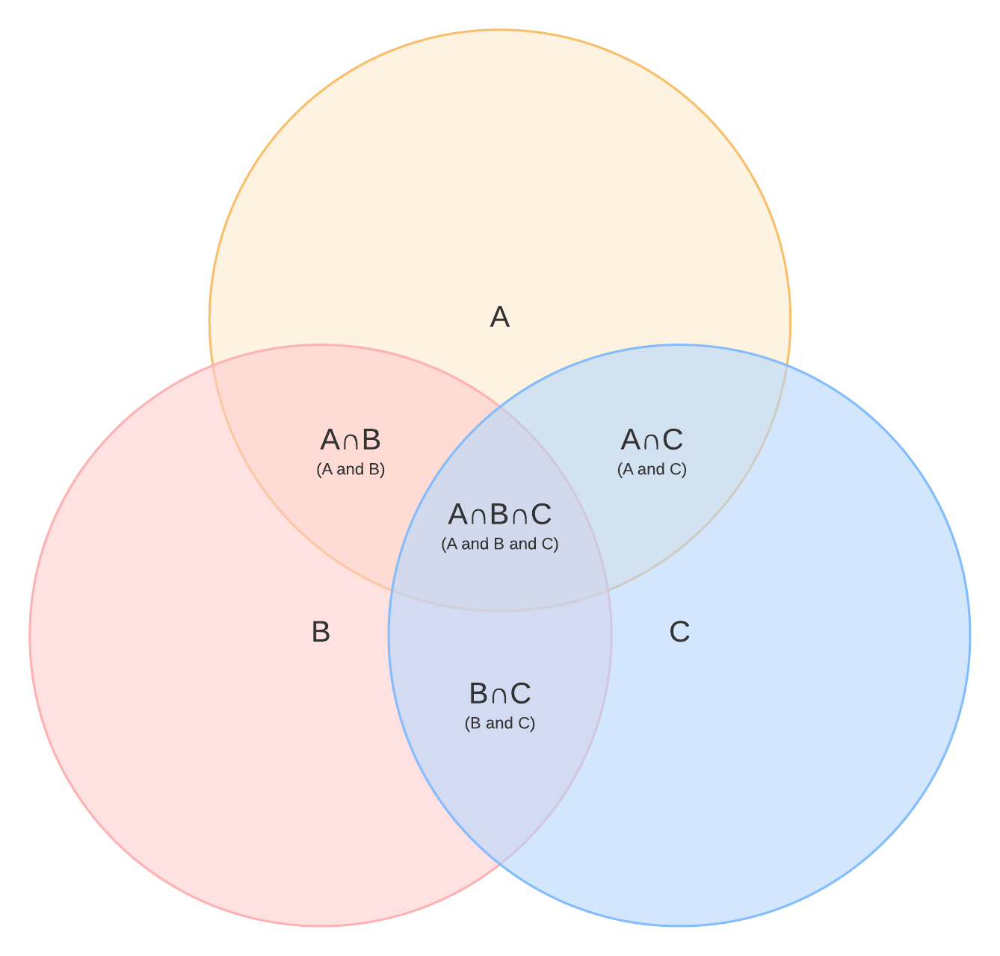
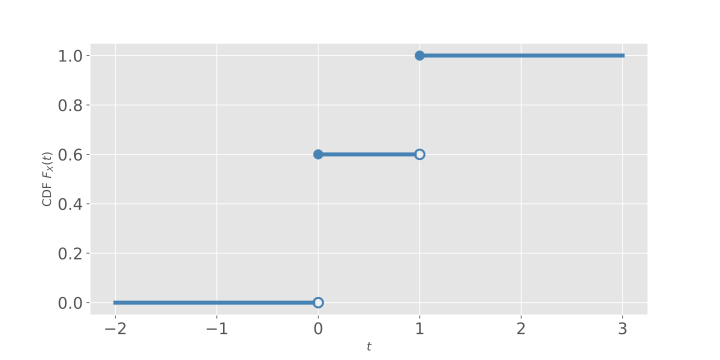
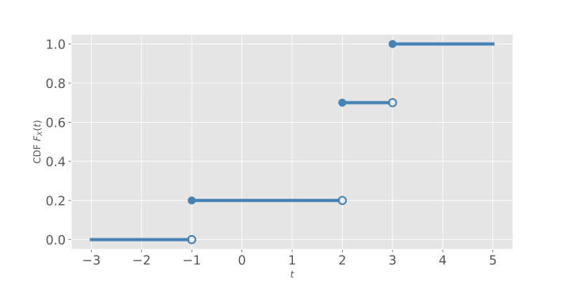
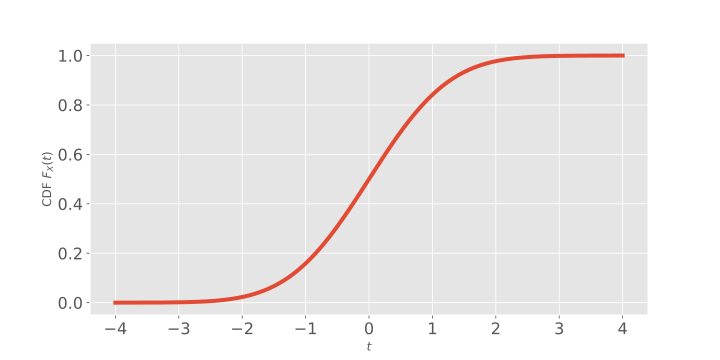
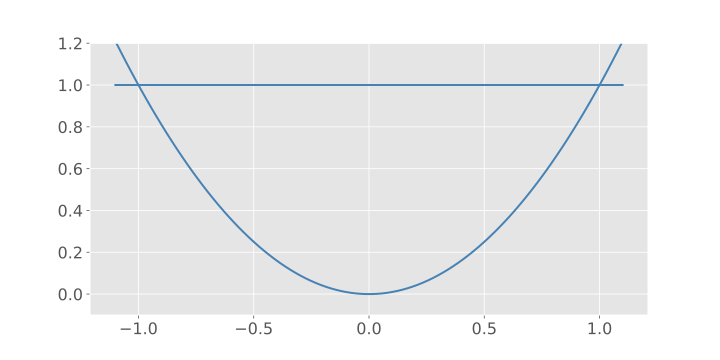
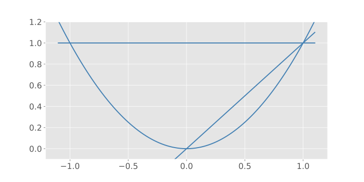
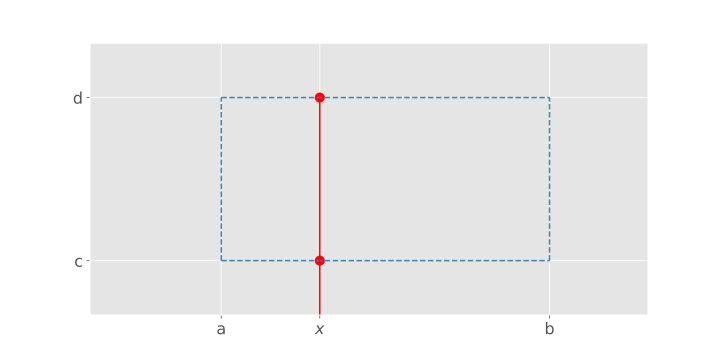
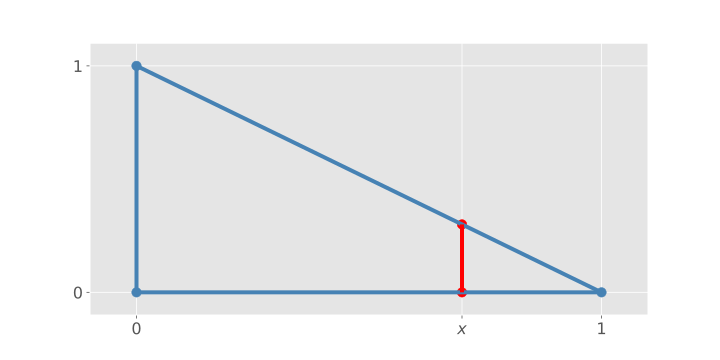
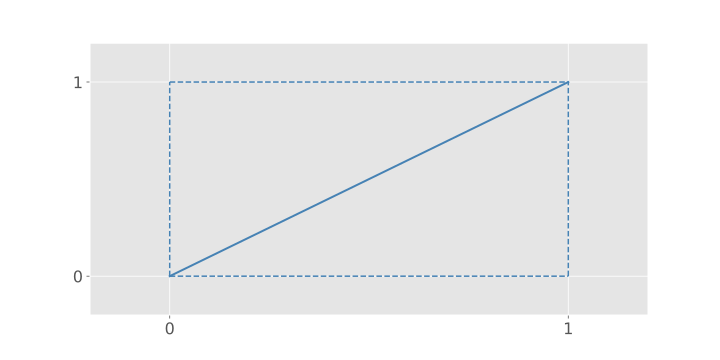

MATH 4740 - Theory of Probability
Jie Zhong
Department of Mathematics
California State University, Los Angeles
Chapter 1 - Introduction to Probability
1.4. Set Theory (Review)
Definition
A set is a collection of objects, usually numbers.
The objects in the set are called elements of the set.
Example
\(A = \{1, 2,3\}\).
\(1\in A\) (\(1\) is an element of \(A\)).
\(4 \notin A\) (\(4\) is not an element of \(A\)).
Notations
We write
- \(\mathbb{N} = \text{set of positive integers} = \{1, 2, 3,\cdots\}\);
- \(\mathbb{Z} = \text{set of integers} = \{0, 1, -1, 2, -2,\cdots\}\);
- \(\mathbb{R} = \text{set of real numbers}\);
- \(\varnothing = \text{empty set = set of no elements} = \{\}\).
Set description
There is another way to describe a set:
\[ \{x \mid x~ \text{satisfies}~ P\} = \text{set of all elements having property}~P. \]
Example
\[ [0,1] = \{x \in\mathbb{R} \mid 0 \le x \le 1\}. \]
Definition (Subset)
\(A\) is subset of \(B\) if every element of \(A\) is an element of \(B\), and we write \(A \subseteq B\).
Set Equality
\(A = B\) if and only if \(A\subseteq B\) and \(B\subseteq A\), if and only if \(A\) and \(B\) have the same elements.
Note: The order in the set does not matter.
For example, \(\{1,2,3\} = \{2, 3, 1\}\).
Example
\(A = \{1, 2, 3\}\), \(B= \{1, 2, 3, 4, 5, 6\}\), and \(C = \{7\}\). Then we have
\[ A \subseteq B, A\nsubseteq C, B\nsubseteq A. \]
Definition (Union and Intersection)
Example
\(A = \{1, 2, 3\}\) and \(B = \{3, 4\}\), then
Definition (Union of Many Sets)
Let \(A_1, A_2, \cdots\) be sets.
where “some” means “as least one”.
Definition (Intersection of Many Sets)
Example
Let \(A_1 = \{1\}, A_2 = \{1,2\}, A_3 = \{1,2,3\},\cdots\). What are \(\cup_{i=1}^n A_i, \cup_{i=1}^\infty A_i, \cap_{i=1}^\infty A_i\), and \(\cap_{i=5}^{10} A_i\)?
\[ \bigcup_{i=1}^n A_i = \{1,\cdots, n\}, \quad \bigcup_{i=1}^\infty A_i = \{1, 2, 3,\cdots\} = \mathbb{N}, \]
\[ \bigcap_{i=1}^\infty A_i = \{1\},\quad \bigcap_{i=5}^{10} = A_5\cap A_6 \cap\cdots\cap A_{10} = \{1, 2, 3, 4,5\}. \]
Definition (Disjoint Set)
Sets \(A\) and \(B\) are called disjoint (mutually exclusive) if \(A\cap B = \varnothing\).
Sets \(A_1, A_2, \dots\) are called disjoint (mutually exclusive) if \(A_i\cap A_j = \varnothing\) for each pair \(i, j\) with \(i\neq j\).
Example
Let \(A=\{1,2,3\}, B=\{7, 22,45\}\).
Then \(A\cap B =\varnothing\), and thus \(A\) and \(B\) are disjoint.
\(A_1 =\{1\}, A_2=\{2\}, A_3 = \{3\},\cdots\), then \(A_1, A_2,\cdots\) are disjoint.
Definition (Universe, Complement and Difference)
Let \(S\) be a universe set, i.e., a set that contains all the objects of interest in a particular context.
Let \(A\) and \(B\) be subsets of \(S\).
- Complement: \(A^c = \{x\in S\mid x\notin A\}\).
- Difference: \(A\setminus B = A - B = \{x\in S\mid x\in A~\text{and}~x\notin B \} = A\cap B^c\).
Example
Let \(S = \mathbb{R}\), \(A = [0,1] = \{x\in \mathbb{R}: 0\le x\le 1\}\), and \(B = \mathbb{Z}\).
What are \(A^c\) and \(A\setminus B\)?
\[ A^c = (-\infty, 0)\cup (1,\infty),\quad A\setminus B = (0,1). \]
Example
\(S^c = \varnothing\), \(\varnothing^c = S\).
What is \(\bigcup_{n\in \mathbb{Z}} (n,n+1)\)?
\[ \{x\in \mathbb{R}\mid x\notin \mathbb{Z}\} = \mathbb{R} \setminus \mathbb{Z}. \]
Algebra of Sets
- \((A^c)^c = A\);
- \(A\cap A^c = \varnothing\);
- \(A\cup S = S\);
- \(A\cap S = A\).
De Morgan’s Laws
- \((A\cup B)^c = A^c \cap B^c\);
- \(\left( \bigcup_i A_i \right)^c = \bigcap_i A_i^c\);
- \((A\cap B)^c = A^c \cup B^c\);
- \(\left( \bigcap_i A_i \right)^c = \bigcup_i A_i^c\).
Proof.
Distributive Properties
- \(A\cap (B\cup C) = (A\cap B) \cup (A\cap C)\);
- \(A\cup (B\cap C) = (A\cup B)\cap (A\cup C)\).
Partition of a Set
For any sets \(A\) and \(B\), we have that \(A\cap B\) and \(A \cap B^c\) are disjoint, furthermore,
\[ A = (A \cap B) \cup ( A \cap B^c ). \]

1.5. The Definition of Probability
Definition
A probability model is a mathematical description of an uncertain situation.
It has two parts: sample space and probability measure.
Sample Space
The sample space \(S\) is the set of all possible outcomes of an experiment.
- Elements of \(S\) are outcomes (also called sample points), denoted by \(\omega\).
- Subsets of \(S\) are called events.
- The set of all events is denoted by \(\mathcal{F}\).
Probability Measure
The probability measure
- \(\mathbb{P}\) is a (set) function from \(\mathcal{F}\) to \(\mathbb{R}\);
- To each event \(A\), it assigns a number \(\mathbb{P}(A)\), called the probability of \(A\).
- The probability measure \(\mathbb{P}\) is also called a probability law.
The triple \((S, \mathcal{F}, \mathbb{P})\) is called a probability space.
Axioms of Probability
Question: How can a set function be a probability measure?
- (A1) \(0\le \mathbb{P}(A)\le 1\) for each event \(A\);
- (A2) \(\mathbb{P}(S) = 1\) and \(\mathbb{P}(\varnothing) =0\);
- (A3) If \(A_1, A_2, \dots\) is a sequence of (pairwise) disjoint events, then
\[\mathbb{P}\left( \bigcup_i A_i \right) = \sum_i \mathbb{P}(A_i).\quad(\text{Countable additivity})\]
Example
Flip a fair coin:
\[ S = \{H, T\}, \quad \mathcal{F} = \{ \varnothing, \{H\}, \{T\}, \{H, T\}\}. \]
Warning: \(\mathbb{P}(H)\) is a wrong notation here!
Consequences of Probability Axioms
\(\mathbb{P}(\varnothing) = 0\).
Proof.
First of all, \(\varnothing \subseteq S\) is an event.
Let \(A_i = \varnothing\) for \(i =1, 2, \dots\), then
\[ A_i \cap A_j = \varnothing, \]
so \(A_i\) and \(A_j\) are disjoint, for \(i \neq j\).
Proof - Continued
By A.3, we have
\[ \mathbb{P}(\varnothing) = \mathbb{P}( \cup_i A_i ) = \sum_{i=1}^{\infty} \mathbb{P}(A_i) = \sum_{i=1}^\infty \mathbb{P}(\varnothing) \]
It follows from A.1 that \(\mathbb{P}(\varnothing) \ge 0\). If \(\mathbb{P}(\varnothing) > 0\), then we have
\[ \mathbb{P}(\varnothing) < \sum_{i=1}^\infty \mathbb{P}(\varnothing), \]
which is a contradiction.
Therefore, \(\mathbb{P}(\varnothing)=0\).
Finite Additivity
If \(A_1, A_2, \dots, A_n\) are disjoint events, then
\[ \mathbb{P}(A_1\cup \cdots \cup A_n) = \mathbb{P}(A_1) + \cdots + \mathbb{P}(A_n). \]
Why?
Let \(A_{n+1} = A_{n+2} = \dots = \varnothing\), so \(A_1, A_2, \dots, A_n, A_{n+1}, \dots\) are disjoint, and
\[ \cup_{i=1}^n A_ i = \cup_{i=1}^\infty A_i. \]
Thus,
\[ \mathbb{P}(\cup_{i=1}^n A_i) = \mathbb{P}(\cup_{i=1}^\infty A_i) = \sum_{i=1}^{\infty} \mathbb{P}(A_i) = \sum_{i=1}^n \mathbb{P}(A_i)+ 0 + \cdots \]
More Consequences
- \(\mathbb{P}(A^c) = 1 - \mathbb{P}(A)\).
- If \(A \subseteq B\), then \(\mathbb{P}(A) \le \mathbb{P}(B)\).
- \(\mathbb{P}(A \cup B) \le \mathbb{P}(A) + \mathbb{P}(B)\).
- \(\mathbb{P}(A \cup B) = \mathbb{P}(A) + \mathbb{P}(B) - \mathbb{P}(A \cap B)\) inclusion-exclusion formula
In particular,
\(\mathbb{P}(A \cup B) = \mathbb{P}(A) + \mathbb{P}(B), \quad \text{if}~ A \cap B = \varnothing\).
1.6. Finite Sample Spaces
Definition
An infinite set \(A\) is called countable if there is a one-to-one correspondence between the set \(A\) and the set \(\mathbb{N}\).
A set uncountable, if it is neither finite nor countable.
A set has at most countably many elements, if the set is either finite or countable.
Example
- \(\{1, 2, 3\}\) is finite.
- \(\mathbb{N}, \mathbb{Z}, \mathbb{Q}\) are countable.
- \(\mathbb{R}, [0, 1]\) are uncountable.
Axioms of Probability for Finite Sample Space
In this section, we only consider \(S\) is finite, that is,
\[ S = \{\omega_1, \omega_2, \dots, \omega_n\}, \quad \#S = n. \]
Let \(p_i = \mathbb{P}(\{\omega_i\})\), by the Axioms of Probability, we need
(1) \(\sum_{i=1}^n p_i = 1\).
(2) \(p_i \ge 0\) for all \(i=1, 2, \dots, n\)
Example
Flip a fair coin.
- \(S = \{H, T\}\)
- \(p_1 = \mathbb{P}(\{H\}) = 1/2 \ge 0\)
- \(p_2 = \mathbb{P}(\{T\}) = 1/2 \ge 0\)
- \(p_1 + p_2 = 1\)
Note: In general, \(p_i\)’s are not necessarily the same.
Example 1.6.2
Five fibers, different length: \(1, 2, 3, 4, 5\) inches. Suppose the probability that any given fiber will be the first to break is proportional to its length.
What is the probability that the length of the fiber that breaks first is not more than \(3\) inches?
Example 1.6.2 (Solution)
Let \(\omega_i\) be the outcome in which the fiber whose length is \(i\) inches breaks first, for \(i= 1, 2, 3, 4, 5\). Then
\[ S = \{\omega_1, \omega_2, \omega_3, \omega_4, \omega_5\}. \]
What event we want to compute the probability for?
\[ A = \{\omega_1, \omega_2, \omega_3\} \subseteq S. \]
To compute \(\mathbb{P}(A)\), we write
\[ \mathbb{P}(A) = \mathbb{P}(\{\omega_1, \omega_2, \omega_3\}) = \sum_{i=1}^3 \mathbb{P}(\{\omega_i\}). \]
Example 1.6.2 (Solution) - Continued
We know that
\[ \mathbb{P}(\{\omega_i\}) = \alpha \cdot i, \]
where \(\alpha\) is a factor to be determined.
Since \(\sum_{i=1}^5 \mathbb{P}(\{\omega_i\}) = 1\), we have
\[ \alpha \sum_{i=1}^5 i = 1, \]
which gives us \(\alpha = 1/15\).
Example 1.6.2 (Solution) - Continued
Therefore,
Simple Sample Space
- \(S = \{\omega_1, \dots, \omega_n\}\)
- \(p_i = \mathbb{P}(\{\omega_i\}) = 1/n\)
Theorem:
Suppose the sample space has finitely many equally likely outcomes, then
\[ \mathbb{P}(A) = \frac{\# A}{\# S} = \frac{\text{number of elements in $A$}}{\text{number of elements in $S$}}. \]
Example
Roll two fair six-sided dice, distinguished in some way: first die and second die.
One possible outcome is \((3, 5)\), which means the first die is \(3\), and the second one is \(5\).
(1) What is the sample space?
(2) What is the probability of rolling doubles?
Example - Continued
(3) Let \(q_i\) denote the probability that the sum of two numbers is \(i\).
What is the range for \(i\)?
Please complete the rest of calculations.
1.7. Counting Methods
Example
How many ways to order a pizza? Suppose each step you can choose only one item.
- Step 1: choose a location: \(20\)
- Step 2: chose the size: S, M, L, XL
- Step 3: crust: Brooklyn style, hand tossed, thin
- Step 4: cheese: light, normal, extra
- Step 5: sauce: BBQ, alfredo, garlic, white sauce
- Step 6: toppings: ham, beef, beacon, green peppers, … 20 items
Multiplication Rule
In general, let’s consider a \(r\) - step procedure/task.
Suppose
- There are \(n_1\) possible outcomes for Step 1.
- For each possible outcome of Step 1, there are \(n_2\) possible outcomes for Step 2.
- Continue …
Then the total number of possible outcomes is
Example
A telephone number is a \(7\) - digit sequence of numbers in \(\{0, 1, \dots 9\}\), but the first digit cannot be zero nor one.
How many distinct telephone numbers are there?
This is a \(7\) - step procedure:
- Step 1: first digit, 8 choices
- Step 2: second digit, 10 choices
- Step 3 - 7: each has 10 choices
By multiplication rule, the total number of telephone numbers:
Example
A screen has \(N\) pixels. Each pixel can be off (black) or on (white). How many possible different images ca the screen display?
This is an \(N\) - step procedure.
For each step, there are \(2\) choices: on or off.
The total is:
Sampling with Replacement (Ordered)
Consider a box that contains \(n\) balls numbered \(1, 2, \dots, n\). First, one ball is selected at random from the box, and its number is recorded. This ball then is put back in the box, and another ball is selected.
It’s possible that the same ball will be selected.
The process is called “sampling with replacement”.
In this case, if \(k\) balls are selected, then by the multiplication rule, the total number of different lists of balls is:
Sampling without Replacement (ordered)
Consider a standard deck of \(52\) cards.
First, one card is selected at random and removed from the deck of cards.
Then, a second card is selected and removed from the deck of cards.
We continue with this fashion.
For example, total of \(5\) cards are selected in this way. Then how many different arrangement of these 5 cards?
\(5\) - step procedure: \(52 \cdot 51 \cdot 50 \cdot 49 \cdot 48\).
This process is called “sampling without replacement”.
Permutations
How many ways are there to permute (means “arrange” or “order”) \(n\) distinct items?
This is an \(n\) - step procedure:
- Step 1: \(n\) choices
- Step 2: \(n-1\) choices
- Step k: \(n - k + 1\) choices
- Step n: \(1\) choice
Total number: \(n \cdot (n-1)\cdot (n-2) \cdots 2 \cdot 1 = n!\)
Example
How many ways can we line up all \(60\) students in a class?
This is greater than the number of all atoms in the observable universe!
\(k\) - Permutations
How many ordered selections of \(k\) items from a set of \(n\) distinct items are possible?
This is clearly \(k\) - step procedure:
\(k\) - Permutations - Continued
Note:
- Permutation is an ordered sampling without replacement.
- We can express the permutation number in terms of factorials:
For example,
Example 1.7.11 Birthday Problem
What is the probability that in a class of \(30\) students, two or more have the same birthday?
First question: what is the sample space? how to describe it?
Clearly, \(\#S = 365^{30}\).
Let \(A\) be the event that two or more students share the same birthday, so we want \(\mathbb{P}(A)\)?
Example 1.7.11 Birthday Problem - Continued
Consider the complement \(A^c\), which means no one shares a birthday.
To find \(\# (A^c)\), consider a \(30\) - step procedure:
Therefore,
If there were \(100\) students, then \(\mathbb{P}(A) \approx = 0.9999997\dots\)
1.8. Combinatorial Methods
Example 1.8.1 (choosing subsets)
Consider the set \(\{a, b, c, d\}\).
How many distinct subsets of size two?
Note: \(\{a, b\} = \{b, a\}\), where the order does not matter!
All subsets of size two:
and the total is \(6\).
Combination
A selection of items from a set such that the order of the selection does not matter.
In fact, a combination is an unordered sampling without replacement.
Question: How many combinations of \(k\) items selected from a set of \(n\) distinct items are possible?
We call this number “\(n\) choose \(k\)”, denoted by
How to find this number \(C_{n,k}\)?
We will use a different way to compute \(P_{n,k}\).
Making an ordered selection of \(k\) items (\(k\text{-permutation}\)) is the same as choosing a combination of \(k\) items and then ordering them.
This is a \(2\text{-step}\) procedure:
So,
Thus,
Example
Select \(5\) of \(30\) students in a class without regard to the order:
Binomial coefficient
Theorem. For any real numbers \(x\) and \(y\), \(n\in \mathbb{N}\),
For the case \(n=2\):
Idea of the proof
After expansion, a typical term should look like
This “const” is the number of copies of each \(x^ky^{n-k}\), which is a combination number selecting \(k\) times of \(x\) out of total number \(n\).
Note:
(1) \(\binom{n}{0} = \binom{n}{n} = 1\).
(2) \(\binom{n}{k} = \binom{n}{n-k}\)
Proof of (2):
The second formula above suggests that choosing \(k\) items from a set of \(n\) distinct items is the same as choosing \((n-k)\) items.
In other words, a combination is in fact a partition of a set into two parts.
Example
Flip a fair coin \(10\) times.
(1) What’s the probability \(p\) of obtaining exactly three heads?
One typical (possible) outcome could be \(H T \dots T\), or \(10\dots 0\).
Thus, the sample space here is
Let \(A\) be the event that we obtain exactly three heads when flipping a coin \(10\) times, so
Flip a fair coin \(10\) times.
(2) What’s the probability \(p'\) of obtaining three or fewer heads?
Let \(A'\) be the event that we obtain three or fewer heads. Then
and so
Sampling with replacement but unordered
Recall: sampling with replacement but ordered
Example 1.8.4 (Blood types)
The gene for human blood types consists of a pair of alleles chosen from three alleles, called \(A, B\) and \(O\).
\(OA\) is the same as \(AO\): order does not matter.
\(AA, BB, OO\) are valid types: with replacement.
Question: How many genotypes are there for the blood type?
We can simply list all cases: \(AA, BB, OO, AB, BO, AO\), and there are \(6\) in total.
Warning: \(6\) here is not \(C_{3,2} = 3\), nor \(3^2 = 9\).
What if a gene consists of a pair chosen from a set of \(n\) different alleles? How many genotypes?
Case 1: there \(n\) pairs where both alleles are the same.
Case 2: there are \(\binom{n}{2}\) pairs where two alleles are different.
Then the total is
In general, the number of unordered sampling of size \(k\) items with replacement for \(n\) items is
When \(k=2\),
Summary
- Sampling with replacement, order matters.
Example: flip a fair coin \(10\) times, then \(\# S = 2^{10} (n^k)\). - Sampling without replacement, order matters.
Example: pick \(5\) students out of 30 to form a line: \(P_{30, 5}, \quad(P_{n,k})\). - Sampling without replacement, order does not matter.
Example: pick \(5\) students out of \(30\) to form a team/committee: \(C_{30, 5} = \binom{30}{5}\). - Sampling with replacement, order does not matter (tricky). Example 1.8.4, Exercise 19.
Example
Suppose we have a class of \(24\) children. We consider three different scenarios that each involves choosing \(3\) children.
Every day a random child is chosen to lead the class to lunch, without regard to previous choices.
(1) What is the probability that Carlos was chosen on Monday and Wednesday, Aaron on Tuesday?
Let \(A\) denote the event that Carlos was chosen on Monday and Wednesday, Aaron on Tuesday.
There are two ways to count in this problem:
but both give you
(2) Three children are chosen randomly to be the class president, vice president and treasurer. No student can hold more than one position. What’s the probability that Mary is president, Cory is vice president and Matt is treasurer?
Let \(A'\) be the event that Mary is president, Cory is vice president and Matt is treasurer. Then
and
(3) A team of three children is chosen at random. What’s the probability that Mary is on the team?
Let \(A''\) be the event that Mary is on the team. Then
and
1.9. Multinomial Coefficients
Recall: Binomial coefficient
Partitions
A combination is a choice of \(k\) items of an \(n\text{-item}\) set, and the order does not matter.
This is the same as partitioning the set into two parts. One part contains \(k\) items, and the other contains the remaining \(n-k\) items.
Now consider partitions into more than two parts.
Example
Suppose that \(20\) members of an organization are to be divided into three committees \(A, B\) and \(C\), in such a way \(A\) and \(B\) each has \(8\) members, \(C\) has \(4\) members. Each member can be assigned to only one committee.
Question: How many ways to assign the members?
\(3\text{-step}\) procedure: in each step we choose the members to one committee.
Partitions - General Case
Given a set of \(n\) distinct items and non-negative integers \(n_{1}, n_{2}, \dots, n_{r}\) with \(n_1 + n_2 + \cdots +n _r = n\).
Question: How many ways can the set be partitioned into \(r\) disjoint subsets with \(n_i\) items in its \(i^{\text{th}}\) subset?
We call this number
This is a \(r\text{-step}\) procedure:
Check for \(r=2\): \(n_1 = k, n_2 = n-k\),
Example
How many arrangements are there of the letters “BANANA”?
Solution (1):
There are \(6\) positions for the \(3\) letters.
Each arrangement is a partition of the set of \(6\) positions into a subset of size \(3\) (the positions that get the letter \(A\)), and subset of size \(2\) (the positions that get the letter \(N\)), and a subset of size \(1\) (the position that gets the letter \(B\)).
For example,
Total number of arrangements:
Solution (2):
We first pretend the \(6\) letters are distinct:
There are \(6!\) ways to arrange them.
But each of \(3!\) ways to arrange \(A\)’s and each of the 2! ways to arrange \(N\)’s correspond to the same arrangement.
For example,
both spell as \(BANANA\).
So we need to divide it by \(3!2!\), and the total number ways is
Example 1.9.4
A deck of \(52\) cards, containing \(13\) hearts. Suppose cards are shuffled and distributed among \(A, B, C\) and \(D\) four players.
What is the probability that \(A\) gets \(6\) hearts, \(B\) gets \(4\) hearts, \(C\) gets \(2\) hearts, and \(D\) gets \(1\) heart?
Solution (1):
Let \(E\) be the event that \(A\) gets \(6\) hearts, \(B\) gets \(4\) hearts, \(C\) gets \(2\) hearts, and \(D\) gets \(1\) heart, then
Thus,
Solution (2):
Consider \(52\) cards are distributed one by one.
So there are \(\# S = \binom{52}{13}\) total number of combinations of positions of \(13\) hearts, and
Of course, the probability \(\mathbb{P}(E)\) is the same as before.
1.10. The Probability of a Union of Events
Recall: Inclusion-Exclusion formula

Theorem
(1) Three events:

(2) General case:
Example 1.10.1 (easy, read by yourself)
Matching Problem
Suppose \(3\) men throw their hats into the center of a room. The hats are mixed up, and then each man randomly selects a hat.
What’s the probability that at least one man selects his own hat?
Want: \(\mathbb{P}(A)\), where \(A\) is the event that at least one man selects his own hat.
What is the sample space \(S\)?
Consider each outcome is a vector of \(3\) members.
For example,
\((1, 2, 3)\) means each man selects his own hat;
\((2, 1, 3)\) means 1st man selects the hat \(2\), 2nd man selects the hat \(1\), and 3rd man selects his own.
Therefore,
\(\# S = 3! = 6\).
What is the event \(A\)?
Denote by \(E_i\) the event that \(i^{\text{th}}\) man selects his own hat, then
To compute \(\mathbb{P}(A)\), we need \(\mathbb{P}(E_{i}), \mathbb{P}(E_{i}\cap E_j)\) and \(\mathbb{P}(E_1\cap E_2\cap E_3)\):
Therefore,
Note: see the “hat problem” on page 49 for the general case.
Chapter 2 - Conditional Probability
2.1. The Definition of Conditional Probability
Given an experiment with probability model \((S, \mathbb{P}, \mathcal{F})\).
Suppose we know the outcome belongs to a given event \(B\), such that \(\mathbb{P}(B)>0\).
The probability that the outcome also belongs to the event \(A\) is called the conditional probability of \(A\) given \(B\), and is defined by
Intuitively, out of the total probability assigned to elements of \(B\), \(\mathbb{P}(A|B)\) is the fraction assigned to elements that also belongs to \(A\):

Example
A fair six-sided die is rolled twice.
You were told that the sum of two rolls is \(9\). How likely is it that the first roll is \(6\)?
Let \(A\) be the event that the first roll is \(6\), and \(B\) be the event that the sum of two is \(9\).
What about \(\mathbb{P}(A|B)\)?
By definition,
Therefore,
Theorem
If we have a simple sample space, then
Example
Toss a fair coin \(5\) times.
What is the probability that there are more heads than tails given that the first toss is heads?
Let \(A\) be the event that there are more heads than tails, and \(B\) be the event that the first toss is heads.
and
So
Important Fact
A conditional probability is a probability measure.
Specifically, given a probability model \((S, \mathbb{P}, \mathcal{F})\), an event \(B\) with \(\mathbb{P}(B)>0\), then the set function \(\mathbb{P}(\cdot | B)\) satisfies the probability axioms and consequences, i.e.,
(1) \(\mathbb{P}(A|B) \ge 0\), for all event \(A\).
(2) \(\mathbb{P}(S | B) = 1\).
(3) If \(A_1, A_2, \dots\) is any countable sequence of disjoint events.
Example
Exercise. 11.
Exercise. 12.
Multiplication rule for conditional probability
Recall:
By reordering the terms, we have
More general version of this rule:
Example
Draw \(3\) cards from a deck of \(52\) cards without replacement. What’s the probability that you draw \(A22\) in that order?
Let \(B\) be the event of interest, and define
So, \(B = A_1 \cap A_2 \cap A_3\), and thus,
Example (Radar detection)
An aircraft is present in a certain area with probability \(0.05\). If an aircraft is present, the radar correctly detects it with probability \(0.99\). If an aircraft is not present, the radar incorrectly registers it with probability \(0.1\).
(1) What’s the probability of a false alarm (no aircraft but radar sees one)?
Let \(A\) be the event that an aircraft is present, and \(B\) be the event that radar sees one.
(2) What’s the probability of a missed detection (that there is an aircraft and radar does not see it)?
Law of total probability
Let \(B_1, B_2, \dots\) be a countable sequence of events that form a partition of the sample space \(S\):
(1) \(B_1, B_2, \dots\) are disjoint, and
(2) \(\cup_{i=1}^{\infty} B_i = S\).
Then for any event \(A\), we have that \(A\cap B_1, A\cap B_2, \dots\) are also disjoint, and

Special case: \(S = B \cup B^c\).
and
Example
There are \(3\) urns. Urn \(1\) has \(3\) red, \(4\) green, and \(5\) blue balls; urn \(2\) has \(3\) red, \(10\) green, and \(1\) blue balls; urn \(3\) has \(3\) red, \(2\) green, and \(2\) blue balls.
Choose one of the urns at random and draw a ball from this urn. What’s the probability that the ball we choose is green?
Let \(A\) be the event of interest.
Partition \(S\) into \(3\) events:
Then we have
and thus
2.2. Independent Events
Definition
We say two events \(A\) and \(B\) are independent if
Note:
(1) \(A\) and \(B\) are disjoint if
(2) Suppose \(\mathbb{P}(B)>0\), events \(A\) and \(B\) are independent if
Intuition: \(A\) and \(B\) are independent if the occurrence of \(B\) does not affect the occurrence of \(A\).
Example
Flip two fair coins.
Let \(A\) be the event that the first coin is heads, and \(B\) be the event that the second is tails.
By intuition, it seems \(A\) and \(B\) are independent.
Check: if \(\mathbb{P}(A\cap B) = \mathbb{P}(A) \mathbb{P}(B)\) ?
Example
Roll a six-sided die.
If you know the outcome is even, would you change the answer to the probability of getting \(6\)?
Let \(A\) be the event of obtaining \(6\), and \(B\) be the event that you get an even number. Then
So \(A\) and \(B\) are not independent.
Equivalent definitions
The following statements are equivalent:
- \(A\) and \(B\) are independent.
- \(\mathbb{P}(A\cap B) = \mathbb{P}(A) \mathbb{P}(B)\).
- \(\mathbb{P}(A|B) = \mathbb{P}(A)\).
- \(\mathbb{P}(B|A) = \mathbb{P}(B)\).
- \(\mathbb{P}(A|B^c) = \mathbb{P}(A)\).
- \(\mathbb{P}(B|A^c) = \mathbb{P}(B)\).
Definition (for three events)
The events \(A_1, A_2, A_3\) are independent if all of the following conditions hold:
- \(\mathbb{P}(A_1\cap A_2\cap A_3) = \mathbb{P}(A_1)\mathbb{P}(A_2)\mathbb{P}(A_3)\).
- \(\mathbb{P}(A_1\cap A_2) = \mathbb{P}(A_1)\mathbb{P}(A_2)\).
- \(\mathbb{P}(A_1\cap A_3) = \mathbb{P}(A_1)\mathbb{P}(A_3)\).
- \(\mathbb{P}(A_2\cap A_3) = \mathbb{P}(A_2)\mathbb{P}(A_3)\).
Example
Flip a fair coin twice.
Let
Then
Are \(A\) and \(B\) independent?
However,
and
Therefore, \(A, B\) and \(C\) are not independent.
Read: Example 2.2.5.
Definition (for \(n\) events)
The events \(A_1, A_2, \dots, A_n\) are independent if
for any index subset \(I\subseteq \{1, 2, \dots, n\}\).
Another equivalent definition
The events \(A_1, A_2, \dots, A_n\) are independent if
for any subset \(I\subseteq \{1, 2, \dots, n\}\), where
In particular, if \(A\) and \(B\) are independent, then
Example 2.2.5 (Inspecting items)
A machine produces a defective item with probability \(p\), and a non-defective item with probability \(1-p\).
\(6\) items are produced, and randomly selected, inspected. What’s the probability that there are exactly \(2\) items are defective?
Label the items by \(1, 2, 3, 4, 5, 6\), and define
Then \(D_1, D_2, \dots, D_6\) are independent.
A typical desired outcome:
Key observation: all desired outcomes have the same probability \(p^2 (1-p)^4\).
Thus, we only need to count the number of such outcomes, which is
Therefore,
2.3. Bayes’ Theorem
Version 1
Bayes’ formula allows you to reverse the order of conditioning.
Version 2
Version 3
Let \(A_1, A_2,\dots\), be a countable partition of \(S\), then
Example (Medical test)
Suppose \(0.1\%\) of the population carries a certain disease. For people with disease, there is a test that correctly gives a positive result \(99.8\%\) of the time. For people without disease, the test correctly gives a negative result \(99.7\%\) of the time.
If one’s test is positive, what is the probability that the person has the disease?
Define
Have:
Have:
Want:
\(\mathbb{P}(A\cap B)\)?
No, but
How to compute \(\mathbb{P}(B|A^c)\) ?
Thus,
Terminology
- \(\mathbb{P}(B|A) = 0.998\): true positive rate
- \(\mathbb{P}(B^c|A) = 0.002\): false negative rate
- \(\mathbb{P}(B^c|A^c) = 0.997\): true negative rate
- \(\mathbb{P}(B|A^c) = 0.003\): false positive rate
In this example, \(\mathbb{P}(A)\) is often called the prior probability, and \(\mathbb{P}(A|B)\) is called the posterior probability.
Example
A grocery store gets eggs from \(3\) different farms.
- \(20\%\) of eggs come from farm \(1\)
- \(30\%\) of eggs come from farm \(2\)
- \(50\%\) of eggs come from farm \(3\)
- \(5\%\) of egg cartons from farm \(1\) contain a cracked egg
- \(3\%\) of egg cartons from farm \(2\) contain a cracked egg
- \(2\%\) of egg cartons from farm \(3\) contain a cracked egg
If you open a carton, and find a cracked egg, what is the probability that the carton came from farm \(3\)?
Define
Want:
Since
Chapter 3 - Random Variables and Distributions
3.1. Random Variables and Discrete Distributions
Definition
Given an probability model \((S, \mathbb{P}, \mathcal{F})\), a random variable is a function \(X\) mapping from \(S\) to a set of real numbers:
To each possible outcome \(\omega\in S\), \(X\) assigns a real number \(X(\omega)\), which is called an experimental value or a realization of \(X\).
Example
Roll two fair six-sided dice.
Define
Sample space
and \(\# S = 36\).
Are these functions (mappings) random variables?
Questions: How can we use such notations to express events?
Let’s compute the probability that the outcome from the first die is \(3\).
So,
We can compute other probabilities, like
and
Notations
- \(\{X = c\} = \{\omega \in S \mid X(\omega) = c\}\).
- \(\{ a \le X \le b \} = \{ \omega \in S \mid a \le X(\omega) \le b\}\).
- \(\{X\in B\} = \{ \omega \in S \mid X(\omega) \in B \}\), \(B\) is a subset of \(\mathbb{R}\).
- \(\{X = a, Y = b\} = \{X = a\} \cap \{ Y = b\}\).
Definition (Probability distribution)
The probability distribution of a random variable \(X\) is a collection of all probabilities of the form \(\mathbb{P}(X\in B)\), for all subset \(B\subseteq \mathbb{R}\), such that \(\{X\in B\} \in \mathcal{F}\).
Two types of random variables
If the range of the random variable \(X\) is at most countable (finite or infinitely countable), we call \(X\) a discrete random variable. Otherwise, we call \(X\) is a continuous random variable.
Definition
Let \(X\) be a discrete random variable. The probability mass function (p.m.f.) \(p_X\) is defined by
Theorem
The probability distribution of a discrete random variable is completely determined by its p.m.f.
Proof
For every \(B\subseteq \mathbb{R}\), we have
Since \(X\) is discrete, \(\text{Range}(X)\) is at most countable, \(B\cap~\text{Range}(X)\) is also at most countable, say
Therefore,
Example
Roll two fair dice. Let
What are the p.m.f.s of \(X_1\) and \(X\)?
For \(X_1\),
\(\text{Range}(X_1) = \{1, 2, 3, 4, 5, 6\}\), and so \(X_1\) is a discrete random variable.
Obviously, if \(k\notin \text{Range}(X_1)\),
For example,
So we only need to consider the case that \(k\in \text{Range}(X_1)\):
To sum up,
Another way of presenting the probability mass function:
| \(k\) | \(1\) | \(2\) | \(3\) | \(4\) | \(5\) | \(6\) |
|---|---|---|---|---|---|---|
| \(p_{X_1}(k)\) | \(1/6\) | \(1/6\) | \(1/6\) | \(1/6\) | \(1/6\) | \(1/6\) |
What about \(X\)?
| \(k\) | \(2\) | \(3\) | \(4\) | \(5\) | \(6\) | \(7\) | \(8\) | \(9\) | \(10\) | \(11\) | \(12\) |
|---|---|---|---|---|---|---|---|---|---|---|---|
| \(p_{X}(k)\) |
Theorem
(1) \(p_X(k) = 0\) if \(k\notin \text{Range}(X)\).
(2) \(\sum_{k\in \text{Range}(X)} p_X(k) = 1\).
Uniform Distribution on Integers
Let \(m< n\) be two integers. Suppose that the value of a random variable \(X\) is equally likely to be each of the integer \(m, m+1, \dots, n\).
Then we say that \(X\) has the uniform distribution on the integers \(m, m+1, \dots, n\).
Also, the p.m.f. of \(X\)
The random variable \(X_1\) in the previous example has the uniform distribution on the integers \(1, 2, \dots, 6\).
Note: Random Variables Can Have the Same Distribution without Being the Same Random Variable.
Bernoulli Distributions.
Flip a coin. Suppose the probability that you get heads is \(p\) (not necessarily to be \(1/2\)), \(p\in [0, 1]\).
Define \(X\) to be the outcome of the experiment:
and
So the p.m.f. of \(X\):
| \(k\) | 1 | 0 |
|---|---|---|
| \(p_X(k)\) | \(p\) | \(1-p\) |
Definition
Let \(0\le p\le 1\). A random variable \(X\) has the Bernoulli distribution with the “success” probability \(p\) if \(X\) is \(\{0, 1\}\text{-valued}\) and satisfies \(\mathbb{P}(X=1) = p\) and \(\mathbb{P}(X=0) = 1-p\).
We write \(X\sim \text{Ber}(p)\).
Binomial Distribution
Flip a (possibly biased) coin \(n\) times.
Let
Then
where
Now we define
So what does \(X\) mean here?
For example,
What is the p.m.f. of \(X\)?
First of all,
and
If \(k\in \text{Range}(X)\),
Therefore,
Definition
Let \(0\le p\le 1\). A random variable is \(X\) has the binomial distribution with parameter \(n\) and \(p\) if
for \(k\in \{0, 1, \dots, n\}\).
We write \(X\sim \text{Bin}(n, p)\).
Note:
In particular, if \(p=1/2\), we have
Example
What is the probability that five rolls of a fair die yield two or three sixes?
Let \(S_5\) be the number of sixes that appear in the five rolls.
Want:
Key: \(S_5 \sim \text{Bin}(5, 1/6)\).
Thus,
3.2. Continuous Distributions
For a continuous random variable, we introduce its probability density function (p.d.f.).
Definition
For a continuous random variable \(X\), if there exists a function \(f_X\), such that
then we call this function \(f_X\) the probability density function of \(X\).
In particular, \(B = [a, b]\),
Note:
(1) \(f_{X}(x) \ge 0\).
(2) \(\int_{-\infty}^{\infty} f_X(x)\, dx = \mathbb{P}(-\infty < X < \infty) = 1\).
Example (Uniform Distribution on Intervals)
Choose a real number uniformly at random from the interval \([0, 1]\), so the sample space \(S = [0, 1]\). Assume that \([a, b]\subseteq S\), the probability that the chosen number lies in the interval \([a, b]\) should be equal to the proportion of \(S\) covered by \([a, b]\),
We call the probability model in this example, the uniform distribution on \([0, 1]\), and we write \(X\sim \text{Unif}([0, 1])\).
Example
Let \(X\sim\text{Unif}([0, 1])\).
Example
What if we change the sample space \(S\) to \([-1, 1]\)?
Consider \([a, b]\subseteq [-1, 1]\),
In general, we say a random variable \(X\) has a uniform distribution on \([c, d], (d>c)\), if
Note that \(\text{Range}(X) = [c, d]\), so what is the p.d.f. of \(X\)?
For example, \([a, b] \subseteq [c, d]\),
Other continuous distributions.
Incompletely specified p.d.f.
Suppose \(X\) has the p.d.f. defined by
(1) Find \(c\)?
Fact:
But,
and
Therefore,
(2) Compute \(\mathbb{P}(1\le X\le 2)\).
(3) Compute \(\mathbb{P}(-5\le X\le 3)\).
(4) Compute \(\mathbb{P}(-5 \le X\le 5)\).
3.3. The Cumulative Distribution Functions
Example
Suppose the p.d.f of \(X\) is defined by
Compute
If \(t = 3\),
If \(t= 2\),
Also, we can compute
and
What if \(t = -1\)?
Where went wrong?
Warning:
If \(t<0\), we have
To sum up,
Definition
Let \(X\) be a random variable. The cumulative distribution function (CDF) of \(X\) is defined by
Note: CDF can be defined for both discrete and continuous random variables.
Example
What is the CDF of a Bernoulli random variable?
Suppose \(X\sim \text{Ber}(p)\), i.e., \(p_X(1) = p, p_X(0)=1-p\).
Want: \(F_{X}(t) = \mathbb{P}(X \le t)\) for all \(t \in \mathbb{R}\).
Let’s just try out some values of \(t\).
To sum up,
The following is the plot of the CDF of Ber\((p)\).

Properties of CDF
(1) \(F\) is non-decreasing: if \(s < t\), \(F(s) \le F(t)\).
(2) \(\lim_{t \to -\infty} F(t) = \lim_{t \to -\infty} \mathbb{P}(X \le t) = 0\).
(3) \(0 \le F(t) \le 1\).
(4) \(F\) is right-continuous.
If \(X\) is discrete with p.m.f. \(p_X\), then
The graph of \(F\) is a non-decreasing right-continuous staircase.

If \(X\) is continuous with p.d.f. \(f_X(x)\), then
The graph of \(F_X\) is non-decreasing and continuous.

Theorem
For \(t \in \mathbb{R}\),
(1) \(\mathbb{P}(X > t) = 1 - \mathbb{P}(X \le t) = 1 - F_X(t)\).
(2) \(\mathbb{P}(s < X \le t) = \mathbb{P}(X \le t) - \mathbb{P}(X \le s) = F_X(t) - F_X(s)\).
(3) \(\mathbb{P}(X < t) = \lim_{s \to t - } \mathbb{P}(X \le s) = F_X(t-)\).
(4) \(\mathbb{P}(X = t) = \mathbb{P}(X \le t) - \mathbb{P}(X < t) = F_X(t) - F_X(t-)\).
In particular, if \(F_X\) is continuous,
which can also be derived by the fact that
Note:
Warning:
For example, Let \(A\) be the event that you pick \(0.4\) uniformly from \([0, 1]\), then \(\mathbb{P}(A) = 0\), but \(A \neq \emptyset\).
3.4. Bivariate Distributions
Definition
Let \(X\) and \(Y\) be two random variables. The bivariate (or joint) distributions of \(X\) and \(Y\) is the collection of all probabilities of the form \(\mathbb{P}((X, Y) \in C)\) for all sets \(C\) of pair of real numbers such that
where \(C \in \mathbb{R}^2 = \mathbb{R}\times \mathbb{R}\).
Discrete Joint Distributions
Theorem. If \(X\) and \(Y\) are both discrete, then \((X, Y)\) has a discrete joint distribution.
Joint Probability Mass Function
Recall: p.m.f. of \(X\)
For \((X, Y)\), we define
Facts:
(1) \(p_{X, Y}(k, l) = 0\) if either \(k \notin \text{Range}(X)\) or \(l \notin \text{Range}(Y)\).
(2) \(\sum_{k, l} p_{X, Y}(k, l) = 1\).
Example
Roll 2 fair four sided dice.
Let \(U\) be the outcome of the first die and \(V\) be the outcome of the second die. Then
The joint p.m.f. of \((U, V)\) is
We can also use a two way table to present the joint p.m.f. as follows:
| \(1\) | \(2\) | \(3\) | \(4\) | |
|---|---|---|---|---|
| \(1\) | \(1/16\) | \(1/16\) | \(1/16\) | \(1/16\) |
| \(2\) | \(1/16\) | \(1/16\) | \(1/16\) | \(1/16\) |
| \(3\) | \(1/16\) | \(1/16\) | \(1/16\) | \(1/16\) |
| \(4\) | \(1/16\) | \(1/16\) | \(1/16\) | \(1/16\) |
Now define
For example,
and
Note that
What is the joint p.m.f. of \((X, Y)\)?
For example,
and
However,
(1) For \(k \in \{1, 2, 3, 4\}, l = 0\):
(2) For \(k\in \{1, 2, 3, 4\}, l \in \{1, 2, 3\}\):
Therefore, we have the following table:
| \(0\) | \(1\) | \(2\) | \(3\) | |
|---|---|---|---|---|
| \(1\) | \(1/16\) | \(1/8\) | \(1/8\) | \(1/8\) |
| \(2\) | \(1/16\) | \(1/8\) | \(1/8\) | \(0\) |
| \(3\) | \(1/16\) | \(1/8\) | \(0\) | \(0\) |
| \(4\) | \(1/16\) | \(0\) | \(0\) | \(0\) |
Now we can even compute:
Continuous Joint Distributions
Definition Two random variables \(X\) and \(Y\) have a continuous joint distribution if there exists a non-negative function \(f\) such that
Here, \(f(x, y)\) is called the joint p.d.f. of \(X\) and \(Y\).
Note:
(1) \(f(x, y) \ge 0, \forall x, y \in \mathbb{R}\).
(2) \(\int_{-\infty}^\infty \int_{-\infty}^\infty f(x, y) \, dx dy = 1\).
Example 3.4.7
Suppose that the joint p.d.f. of \(X\) and \(Y\) is
(1) Find \(c\)?

so \(c = 21/4\).
(2) Compute \(\mathbb{P}(X \ge Y)\).
Recall that
Thus,

Bivariate CDF
Definition. Given two random variables \(X\) and \(Y\), then the joint CDF of \((X, Y)\) is
Example
Suppose \(a < b, c < d\).
Express \(\mathbb{P}(a < X \le b, c < Y \le d)\) in terms of \(F_{X, Y}\).
Recall that
Recall that if \(X\) is continuous with p.d.f. \(f(x)\), then
If \(X, Y\) are continuous, then
and
Example
Suppose the joint CDF of \((X, Y)\) is
Find \(f(x, y)\).
Then
3.5. Marginal Distributions
Theorem
(1) If \(X\) and \(Y\) are discrete random variables, then the p.m.f. of \(X\) and \(Y\) are obtained from the joint p.m.f. of \((X, Y)\) by
Idea of the proof: law of total probability.
(2) If \(X\) and \(Y\) are continuous random variables, then the p.d.f.s of \(X\) and \(Y\) are obtained from the joint p.d.f. of \((X, Y)\) by
Example (Deriving Marginal p.m.f. from Joint p.m.f.)
Recall
| \(0\) | \(1\) | \(2\) | \(3\) | |
|---|---|---|---|---|
| \(1\) | \(1/16\) | \(1/8\) | \(1/8\) | \(1/8\) |
| \(2\) | \(1/16\) | \(1/8\) | \(1/8\) | \(0\) |
| \(3\) | \(1/16\) | \(1/8\) | \(0\) | \(0\) |
| \(4\) | \(1/16\) | \(0\) | \(0\) | \(0\) |
Example (Deriving Marginal p.d.f. from Joint p.d.f.)
Recall
What is \(f_X(x)\, (f_Y(y))\)?
Independent Random Variables
Recall: Events \(A\) and \(B\) are independent, if
Definition
We say random variables \(X\) and \(Y\) are independent, if
for all \(A, B \subseteq \mathbb{R}\).
In particular, if \(A = (-\infty, x], B = (-\infty, y]\), then
Theorem
(1) \(X\) and \(Y\) are independent if and only if
(2) \(X\) and \(Y\) are independent if and only if the following factorization is satisfied:
Continuous case: \[f_{X, Y}(x, y) = f_1(x) f_2(y), \, \forall x, y \in \mathbb{R}.\]
Discrete case: \[p_{X, Y}(k, l) = p_X(k) p_Y(l), \, \forall k, l \in \mathbb{R}.\]
Example
Flip a fair coin twice.
Let \(X\) be the outcome of the first flip, and \(Y\) be the second. Then we have
| \(0\) | \(1\) | |
|---|---|---|
| \(0\) | \(1/4\) | \(1/4\) |
| \(1\) | \(1/4\) | \(1/4\) |
It is easy to check that
So \(X\) and \(Y\) are independent.
Example
| \(0\) | \(1\) | \(2\) | \(3\) | |
|---|---|---|---|---|
| \(1\) | \(1/16\) | \(1/8\) | \(1/8\) | \(1/8\) |
| \(2\) | \(1/16\) | \(1/8\) | \(1/8\) | \(0\) |
| \(3\) | \(1/16\) | \(1/8\) | \(0\) | \(0\) |
| \(4\) | \(1/16\) | \(0\) | \(0\) | \(0\) |
Are \(X\) and \(Y\) independent?
No!
For example, \(p_X(1) = 7/16, p_Y(0) = 1/4\), but \(p_{X, Y}(1, 0) = 1/16\), and
Example
Let \((X, Y) \sim \text{Unif}(A)\), where \(A = [a, b]\times [c, d]\), i.e.,
Are \(X\) and \(Y\) independent?
Check: \(f(x, y) = f_1(x) f_2(y)\) ?
First, we need to calculate the marginal p.d.f.s.

Similarly, we have
So,
and thus \(X\) and \(Y\) are independent.
Example
Let \((X, Y) \sim \text{Unif}(A)\), where \(A\) is a triangle with vertices \((0, 0), (0, 1)\) and \((1, 0)\).
The joint p.d.f. of \((X, Y)\) is:
Are \(X\) and \(Y\) independent?

Similarly,
Thus,
Therefore, \(X\) and \(Y\) are not independent.
3.6. Conditional Distributions
Definition
Recall
Let \(X\) and \(Y\) be two discrete random variables, then
is called the conditional p.m.f. of \(X\) and \(Y\).
Example
| \(0\) | \(1\) | |
|---|---|---|
| \(0\) | \(3/10\) | \(2/10\) |
| \(1\) | \(1/10\) | \(4/10\) |
From the table, we have \(X \sim \text{Ber}(1/2)\), and \(Y \sim \text{Ber}(3/5)\).
What is the conditional p.m.f. of \(X\) given \(Y\)?
Want:
If \(k \notin \{ 0, 1\}\) or \(l \notin \{0, 1\}\),
Similarly,
Definition
Let \(X\) and \(Y\) be two continuous random variables, then
is called the conditional p.d.f. of \(X\) given \(Y\).
Example
Recall
Also,
Therefore,
In particular,
Multiplication Rule for Conditional Random Variables
Recall
Theorem
Law of Total Probability for Random Variables
Recall
Theorem
Bayes’ Theorem for Random Variables
Example 3.6.10
Let \(X \sim \text{Unif}([0,1])\). For \(0 < x < 1\), after \(X=x\) has been observed, a point \(Y\) is chosen from a uniform distribution on \([x, 1]\).
What’s the p.d.f. of \(Y\)?
Have:
(1)
(2) If \(X = 0.3\), then \(Y \sim \text{Unif}([0.3, 1])\), i.e.,
In general,
Want: \(f_Y(y) =?\)

What about \(f_{X|Y}(x | y) = ?\)
Independence of Two Random Variables
Recall: if two events \(A\) and \(B\) are independent,
Theorem
Two random variables \(X\) and \(Y\) are independent if and only if
3.8. Functions of a Random Variable
Question: Given the distribution of a random variable \(X\), what’s the distribution of \(Y = h(X)\) for some function \(h\)?
Discrete Case
Example
Let \(X\) be the uniform distribution on integers \(\{1, 2, \dots, 9\}\), i.e.,
Let \(Y = |X - 5|\), what’s \(p_Y(l)\)?
Note that \(\range (Y) = \{0, 1, 2, 3, 4\}\).
Similarly, for \(k = 1, 2, 3, 4\),
To sum up,
Theorem
Let \(X\) be a discrete random variable with p.m.f. \(p_X\) and \(Y = h(X)\) for some function \(h\) defined on the set of possible values of \(X\). Then the p.m.f. of \(Y\) is
Continuous Case
Example (Averaging waiting time)
Let \(Z\) be the rate at which customers are served in a queue, and suppose \(Z\) is continuous with CDF, say \(F_Z\).
The average waiting time is \(Y = 1/Z\) (\(h(x) = 1/x\)).
Find \(F_Y\) (in terms of \(F_Z\)).
In general, given the p.d.f. of \(f_X\) of \(X\), we can write
If \(Y = h(X)\) is continuous, then
Question: If \(X\) is continuous, is \(Y = h(X)\) always continuous? If not, counterexample?
Example
Let \(X \sim \text{Unif}([-1, 1])\), and \(Y = X^2\). Find p.d.f. of \(Y\)?
Note that \(\range (Y) = [0, 1]\), uncountable.
First of all, find the CDF of \(Y\).
So,
If \(0 < y < 1\), then \([-\sqrt{y}, \sqrt{y}] \subseteq [-1, 1]\).
To sum up,
Finally,
Linear Transformation
Theorem
Suppose \(X\) has p.d.f. \(f_X\), and \(Y = a X + b\), then
Read the proof.
The Probability Integral Transformation
Example Let \(X\) be continuous with p.d.f.
and CDF
Now \(h = F_X\), i.e., \(h(x) = 1 - e^{-x}\).
Define
What’s the distribution of \(Y\)?
So,
and
Therefore, \(Y \sim \text{Unif}([0, 1])\).
Chapter 4 - Expectation
4.1. The Expectation of a Random Variable
Roughly speaking,
Definition
(1) If \(X\) is discrete with p.m.f. \(p_X\), then the expectation of \(X\) is
(2) If \(X\) is continuous with p.d.f. \(f_X\), then the expectation of \(X\) is
Example
\(X \sim \text{Ber}(p)\), i.e.,
Then
Example
Suppose you got:
| HW | \(9/10\) |
| M1 | \(45/50\) |
| M2 | \(40/50\) |
| Final | \(83/100\) |
According to our syllabus, what’s your weighted average of your final grade?
Example
\(X \sim \text{Bin}(n, p)\), Find \(\mathbb{E}(X)\).
If \(n=1\), \(X \sim \text{Bin}(1, p) = \text{Ber}(p)\), so
Recall that \(X\) is the number of “successes”, so
Proof
Note that \(\range (X) = \{0, 1, 2, \dots, n\}\). By definition,
Example
\(X \sim \text{Unif}([a, b])\), i.e.,
Find \(\mathbb{E}(X)\).
Expectation of a Function of Random Variables
Given a random variable \(X\) and a function \(g: \mathbb{R} \mapsto \mathbb{R}\), by definition directly,
Most of the time, we don’t know the p.m.f. or p.d.f. of \(Y\), what can we do?
Law of the Unconscious Statistician (LOTUS)
Discrete:
Continuous:
In particular, if \(g(x)=x\), LOTUS is just the usual definition of the expectation.
Example
Roll a fair six sided die.
Let \(X\) be the outcome, i.e.,
Then
Example 4.1.6
Let \(X\) be a continuous random variable with p.d.f.
Define
Find \(\mathbb{E}(X)\).
Solution 1
Find p.d.f. of \(Y\).
To this end, we need to find the CDF first.
To sum up,
Thus,
Finally,
Solution 2 (LOTUS)
4.2. Properties of Expectations
Theorem (Linearity)
If \(Y = aX + b\), where \(a, b \in \mathbb{R}\), then
In particular, if \(a = 0\), \(Y = a X + b = b\), then
Proof (Continuous case)
Theorem
Assume \(\mathbb{E}(X_i)\) is finite for \(i = 1, 2, \dots, n\). Then
In particular,
Example
Recall that if \(X \sim \text{Bin}(n, p)\), we computed
where
Thus,
Example (Match Problem Revisited)
Suppose \(n\) men throw their hats into the center of a room. Then hats are mixed up, and each man randomly selects a hat.
Let \(X\) be the number of men who gets his own hat.
Find \(\mathbb{E}(X)\).
Define
Then
Note that \(X_i \sim \text{Ber}(p_i)\), where
So
Independence and Expectation
Theorem
If two random variables \(X\) and \(Y\) are independent, and \(\mathbb{E}(X), \mathbb{E}(Y)\) are finite. Then
In general, if \(X_1, \dots, X_n\) are independent, then
Example
Suppose \(X_1, X_2, X_3\) form a random sample, i.e., independent and identically distributed, such that \(\mathbb{E}(X_1) = 0, \mathbb{E}(X_1^2) = 1\).
Compute
4.3 & 4.6 Variance, Covariance and Correlation
Definition
Let \(X\) be a random variable, let \(\mu_X = \mathbb{E}(X)\). Then
is called the variance of \(X\), and measures how spread out of the distribution of \(X\) is.
Example
Let \(X \sim \text{Unif}([0, 1])\), then
Thus,
Example
Let \(X \sim \text{Ber}(p)\), what is \(\text{Var}(X)\)?
Since \(\mathbb{E}(X) = p\),
Definition
Let \(X, Y\) be two random variables. Then
is called the covariance of \((X, Y)\), and measures “dependence” between \(X\) and \(Y\).
Intuition
If \((X - \mu_X)(Y - \mu_Y) > 0\), then \(X\) and \(Y\) are both above or below their means.
If \((X - \mu_X)(Y - \mu_Y) < 0\), then \(X\) and \(Y\) are on opposite sides of their means.
In particular,
Formulas
(1) \(\text{Cov}(X, Y) = \mathbb{E}(XY) - \mathbb{E}(X) \mathbb{E}(Y)\).
(2) \(\text{Var}(X) = \mathbb{E}(X^2) - \left(\mathbb{E}(X)\right)^2\).
Proof of (1).
Example
Let \(X \sim \text{Unif}([0, 1])\), we computed
Now we apply the formula above to recompute the variance.
First, we have \(\mathbb{E}(X) = 1/2\).
Second, \(\mathbb{E}(X^2) = \int_0^1 x^2 \cdot 1 \, dx = \frac{1}{3}\).
Therefore, \(\text{Var}(X) = \mathbb{E}(X^2) - (\mathbb{E}(X))^2 = \frac{1}{3} - \left(\frac{1}{2}\right)^2 = \frac{1}{12}\).
Try to find \(\mathbb{E}(X), \text{Var}(X)\) for \(X \sim \text{Unif}([a, b])\).
Example
Suppose \((X, Y)\) has the joint p.d.f.
Find \(\text{Cov}(X, Y)\).
Similarly,
Thus,
Properties of Covariance
(1)
(2)
(3)
In particular, take \(a = 0\) in (1), we have
(4)
(5)
Proof of (1).
Variance of Sum
Recall
For the variance, we have
(1)
(2)
Example (Match Problem again)
Suppose \(n\) men throw their hats into the center of a room. Then hats are mixed up, and each man randomly selects a hat.
Let \(X\) be the number of men who gets his own hat.
Find \(\text{Var}(X)\).
Define
Then
Note that \(X_i \sim \text{Ber}(p_i)\), where \(p_i = \mathbb{P}(X_i = 1) = \frac{1}{n}\).
Also, we have
Fix \(1 \le i < j \le n\),
So,
Finally,
In the previous calculation, we used the fact that
Correlation
Suppose you have \(X, Y\) with \(\text{Cov}(X, Y) = 5\).
Define
Then
Question: How to obtain a measure of “dependence” between \(X, Y\) that is not driven by changing the scales of random variables?
Definition
is called the standard deviation of \(X\), and
is called the correlation of \(X\) and \(Y\).
Rearrange the terms, we have
Let’s come back to the previous example: \(U = 10 X, V = 10 Y\).
Properties of Correlation
(1) \(-1 \le \rho(X, Y) \le 1\).
(2) \(\rho(X, Y) = 1\) if and only if \(Y = a X + b\) for some \(a > 0, b \in \mathbb{R}\).
(3) \(\rho(X, Y) = -1\) if and only if \(Y = a X + b\) for some \(a < 0, b \in \mathbb{R}\).
Example
Assume that
Then
Thus,
Example
Consider tossing a coin \(n\) times. The probability of “success” (getting a head) is \(p\).
Let \(X, Y\) be the number of heads and tails, respectively.
Compute \(\text{Corr}(X, Y)\).
It is clear that
so \(\rho(X, Y) = -1\).
What about \(\rho(X, Y) = 0\)?
In this case, we say that \(X, Y\) are uncorrelated if \(\rho(X, Y) = \text{Cov}(X, Y) = 0\).
Theorem
If two random variables \(X\) and \(Y\) are uncorrelated, then
Independence and Correlation
Theorem
Warning:
Example
Let \(X\) be uniform on integers \(\{-1, 0, 1\}\), i.e.,
Let \(Y = X^2\), we have
We used the fact that \(X = X^3\) and \(\mathbb{E}(X) = (-1 + 0 + 1) \cdot \frac{1}{3} = 0\).
Therefore, \(X\) and \(Y\) are uncorrelated.
However, \(X\) are \(Y\) ar not independent since
and
which implies
Example
Let \(X_1, \dots X_n\) be a random sample from Bernoulli distribution with probability of success \(p\), and \(X = \sum_{i=1}^n X_i\).
Example
Assume \((X, Y)\) has a joint p.d.f.
Find \(\text{Cov}(X, Y)\).
Solution 1
To compute the covariance, we need to calculate \(\mathbb{E}(X), \mathbb{E}(Y)\) and \(\mathbb{E}(XY)\).
To this end, we compute
Thus,
Solution 2
Clearly,
where
Therefore, \(X\) and \(Y\) are independent and thus they are uncorrelated.
4.4. Moments
Definition
Given a random variable \(X\), \(\mathbb{E}(X^k)\) is called the \(k^{\text{th}}\) moment of \(X\), for \(k \ge 0\), integer.
In particular,
- \(k = 0: \mathbb{E}(X^0) = \mathbb{E}(1) = 1\).
- \(k = 1: \mathbb{E}(X^1) = \mu_X\), mean or \(1^{\text{st}}\) moment.
- \(k = 2: \mathbb{E}(X^2) = \sigma^2 + \mu^2\), \(2^{\text{nd}}\) moment.
Example
Let \(X \sim \text{Ber}(p)\), then
- \(\mathbb{E}(X) = p\)
- \(\mathbb{E}(X^2) = 0^2 \mathbb{P}(X = 0) + 1^2 \mathbb{P}(X = 1) = p\)
- \(\mathbb{E}(X^3) = p\)
- \(\mathbb{E}(X^k) = p, \quad k \ge 1\).
In general, it is not easy to compute \(\mathbb{E}(X^k)\) for arbitrary \(k \ge 1\).
Moment Generating Functions (m.g.f.)
Can generate moments
Definition
Given a random variable \(X\), we call
the m.g.f. of \(X\).
Example
Let \(X \sim \text{Ber}(p)\), find \(\psi_X(t)\).
By definition,
Example
Let \(X\) be a discrete random variable with \(\range (X) = \{k_1, k_2, \dots, k_n\}\) and
Find \(\psi_X(t)\).
Example
Suppose the m.g.f. of \(X\) is
What’s the distribution of \(X\)?
From the previous example, we have
and so \(X\) is discrete with
Example
Suppose \(X\) has a p.d.f
Find \(\psi_X(t)\).
If \(t = 1\),
If \(t \neq 1\),
To sum up,
Why do we call \(\psi_X(t)\) the moment generating function?
It is simply because it generates moments, but how?
Recall the Maclaurin series of \(e^x\):
Theorem
Given a random variable \(X\). If the m.g.f. of \(X\) is finite for all \(t\) in some open interval around \(t=0\), then
Example
Recall:
Find \(\mathbb{E}(X)\) and \(\text{Var}(X)\).
Since
we have
For the variance,
But
and thus
Therefore,
Properties of m.g.f.
Theorem (Linear transformation)
Given a random variable \(X\), and let \(Y = a X + b\), then
Proof.
Example
Recall again
Let \(Y = 3 - 2X\), find \(\psi_Y(t)\).
Independence and m.g.f.
Theorem
If two random variables \(X\) and \(Y\) are independent, then
Proof.
In general, \(X_1, X_2, \dots, X_n\) are independent, then
Example
Find the m.g.f. of \(X \sim \text{Bin}(n,p)\).
Since